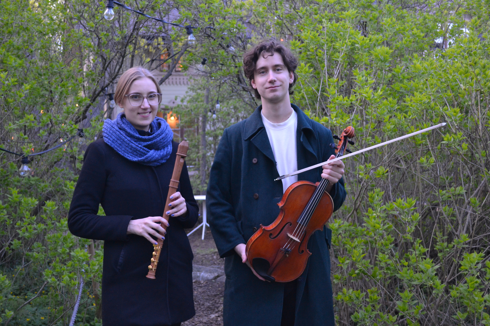

Ensembler/Projekt
Hellström & Dahlström
Duo Hellström & Dahlström består av Klara Hellström på blockflöjt och Ludvig Dahlström på viola. Duon har jobbat ihop i 10 år och spelat konserter runt om i Sverige. Repertoaren sträcker sig från J.S. Bach tills idag med nyskriven musik i samarbete med tonsättare som duon uppfört. Hellström & Dahlström blandar också ofta in folkmusik i sina musikprogram, bland annat svensk och irländsk. Den något ovanliga kombinationen av instrument kräver en del påhittighet med att välja repertoar, och det är snarare regel än undantag att arrangera om musik skrivet för andra instrument. Under 2025 har duon jobbat med sitt första album samt sitt nya musikprogram “Vi sålde vår hemman” där duon blandar musik med berättande om emigrationen till Amerika.

Musica Humana
Musica Humana består av Elisabeth Hellström, sopran, Klara Hellström, blockflöjter och Helena Holmlund, cembalo. Gruppen bildades 2022 när de studerade tillsammans på masterprogrammet i tidig musik på Kungliga Musikhögskolan. Sedan dess har de gjort flera konserter i bland annat Stockholm, Uppsala och Umeå. I september 2024 spelade de även in musik till en gudstjänst för “Livsåskådning i P1”.
Musica Humana fokuserar främst på musik från högbarocken och har verk av bl.a. G.F. Händel, M. P. de Montéclair och G. Ph. Telemann på sin repertoar, men även tidigare kompositörer som Alessandro Scarlatti och Claudio Monteverdi. Ensemblen plockar också gärna fram okända verk och tonsättare till sina program. Namnet Musica Humana är hämtat från antikens filosofi och syftar på själens och kroppens harmoni och deras inbördes relation som skulle bestå i ”en enda väl avvägd blandning av låga och höga ljud som förenas i en enda samklang”.

Högalid Barock
Högalid barock består av Klara Hellström och Yael Tishler, blockflöjter, Johanna Niederbacher, barockcello och Benedikt Melichar, cembalo. Grupper spelar triosonater från tidig barock till senbarocken och repertoaren består av bland annat kompositörer som Telemann, Vivaldi, Merula och Marais. Deras namn Högalid barock kommer från att ensemblen utgår från Högalid församling där Benedikt arbetar som kyrkomusiker. Ensemblen är aktuell med programmet “Passionens element” där publiken tas med på en resa genom barockens alla utlysande kontraster.